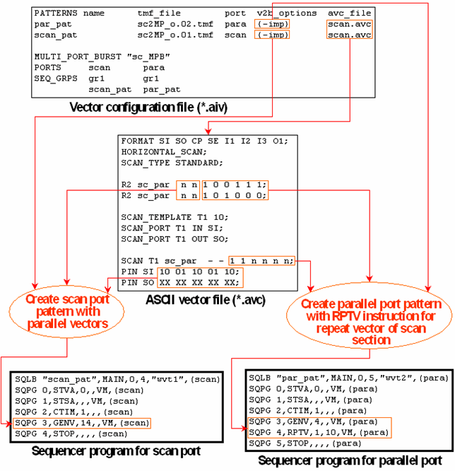

Converting an ASCII Scan Setup Into a Binary Multi-Port Setup
The vector translation can convert a scan setup within an ASCII vector file into a binary multi-port setup where the scan vectors are generated with GENV and RPTV instructions. In this binary setup, the scan pins and the parallel pins are put into to different ports, each of which has its own sequencer program. This makes it possible to retain the advantage that the repeat vectors for the parallel pins are stored only once, since they can now be repeated with an RPTV instruction in the parallel port.
The ports to be used are passed to aiv in the vector configuration file (*.aiv). The scan instances are translated into normal GENV and RPTV instructions.
The main points to observe when you want to perform this conversion are the following:
- The definitions of the ports that are specified in the vector configuration file must correspond to the distinction between parallel pins and scan pins in the ASCII vector file.
- You must specify the ASCII vector file containing the scan setup in the
avc_file column for both ports.
The vector translation is able to extract the information required for the two port specific patterns from this single global file (see Using One ASCII Vector File for Several Ports).
- You must define the multi-port burst in the vector configuration file (or in the *.aic file if you call ait and aiv in one run).
- The actual conversion is triggered with the v2b option -imp or -impv. -impv not only converts the scan setup into a multi-port setup, it also inserts an instance of the VCAT command for every scan instance into the binary vector file. These VCAT commands inform the SCAN_TEST_RESULT test method API (see SCAN_TEST_RESULT) where the scan instances start within the test.
Example
The following figure shows a basic example:

In this example, the port scan, as specified in the *.aiv file, must contain the pins SI and SO. All other pins must belong to the port para.
You can generate the vector configuration file in the usual way by an ait call. You only have to specify the -imp option for the respective patterns in the v2b_options column of the global configuration file (*.aic).
You can also define an x-mode, even different x-modes, for the two patterns. It is even possible to synchronize the scan and parallel sections of patterns that that run with different x-modes (see Synchronizing Scan and Parallel Ports with Different X-Mode Factors for details).
By default, the conversion adds the template name and the instance number as comments to the vectors that act as scan vectors. You can suppress these comments with the v2b option -imc.